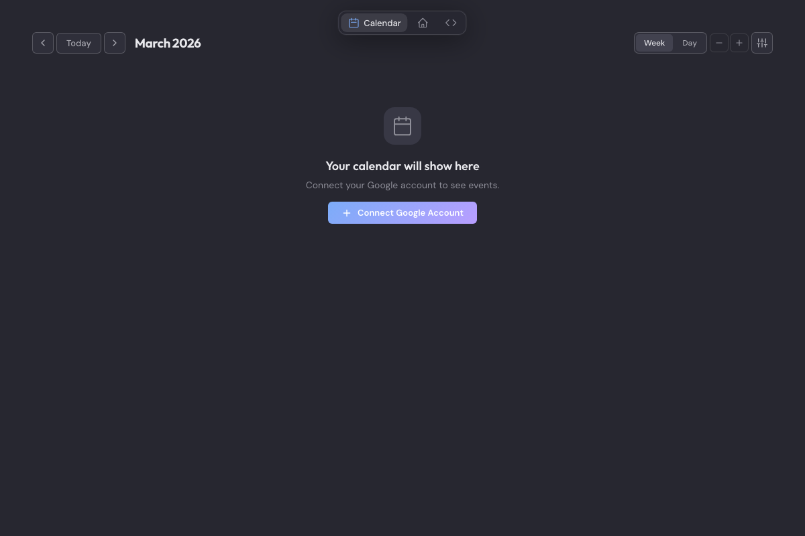

Mira pulls your Jira tasks, GitHub PRs, and Google Calendar into one place — then auto-schedules everything so you can focus on the work, not the planning.

Hit one button and Mira slots your tasks around existing events by priority and deadline. Preview before applying.
Two-way Google Calendar sync with per-event colors, multi-slot scheduling, and Jira worklog creation.
Pull assigned Jira tasks and GitHub PRs needing your review. Filter by status, group by epic, schedule review time.
Built with Tauri and Rust. Your data stays on your machine — tokens stored in your system keyring, not the cloud.
Free and open-source. Available on all platforms.
Or browse all releases on GitHub Releases.